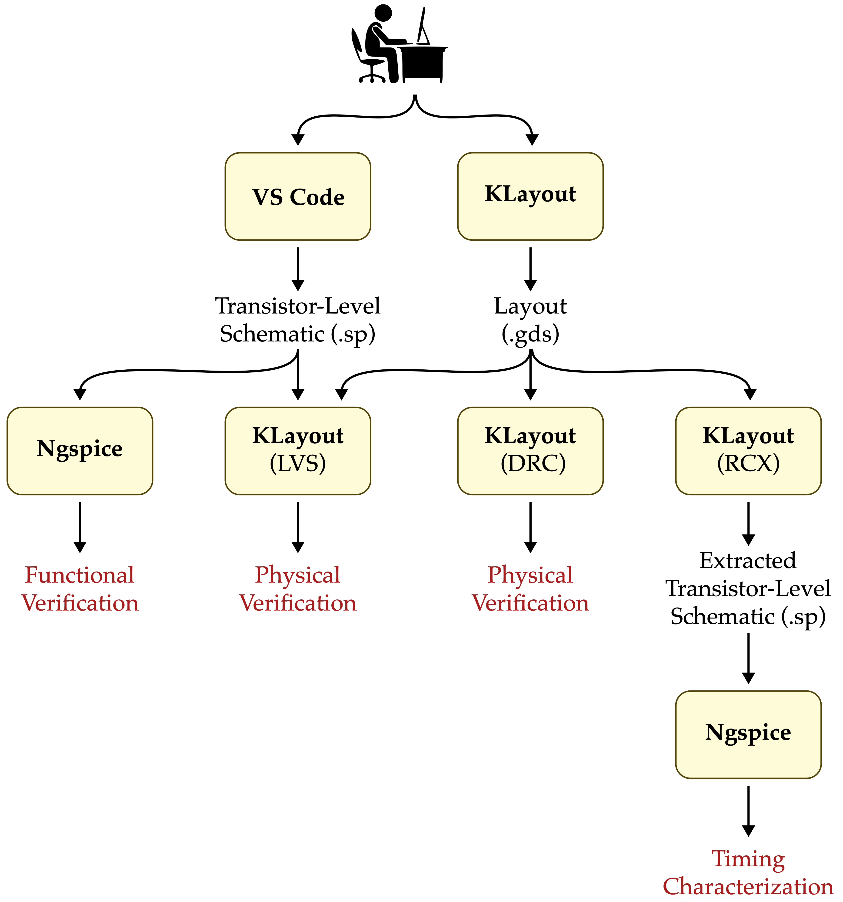
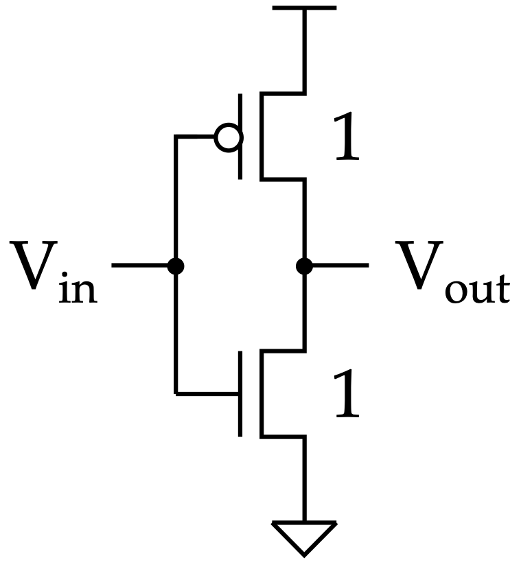
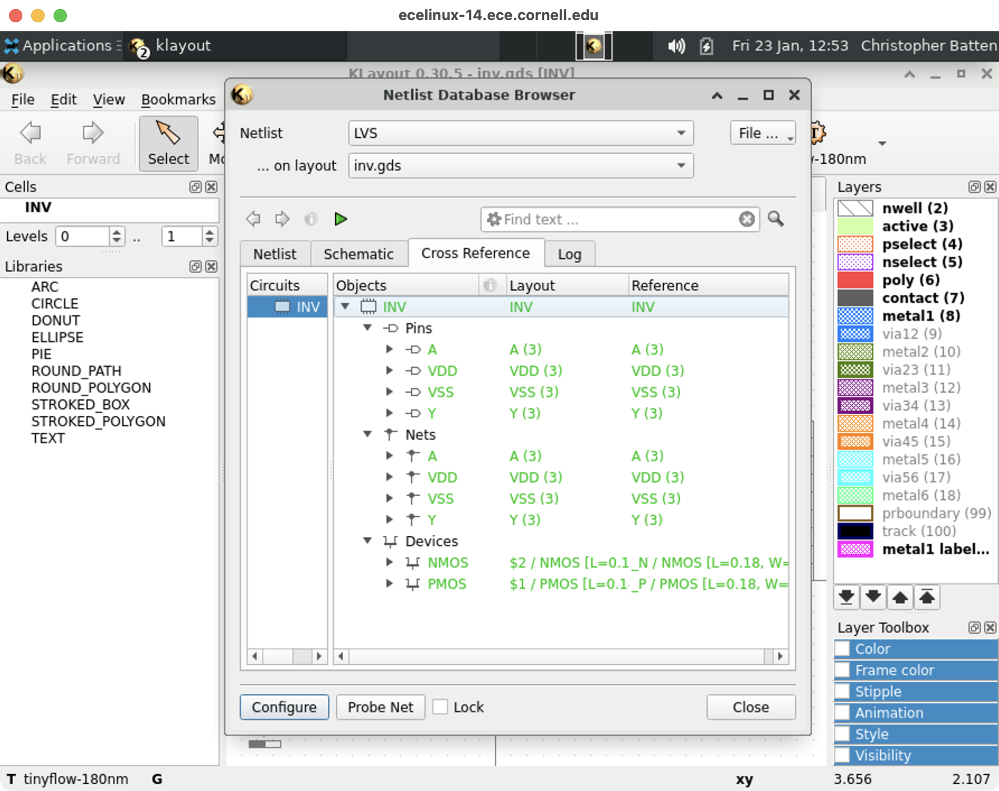
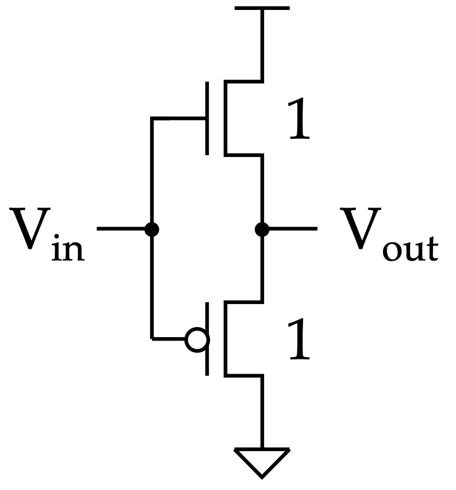

ECE 6745 Lab 1: Full-Custom Inverter
In this lab, we will first make sure we can access the Linux development
environment on the ecelinux servers. We will be using the ecelinux
servers for all of the labs and projects. The ecelinux servers all run
the Red Hat Enterprise Linux 8 operating system, and they all use an
identical setup. We will then design the basic CMOS inverter we saw in
lecture using the following TinyFlow full-custom design flow.

We will write a transistor-level schematic, simulate the this schematic using Ngspice to verify its functionality, use the KLayout design editor to create the layout, perform a design-rules check (DRC), perform a layout vs. schematic check (LVS), and generate an extracted transistor-level schematic. Finally, we will re-simulate the extracted transistor-level schematic to characterize the timing. We will also be implementing a CMOS buffer to verify our intuition that NMOS transistors should only be used in the pull-down network and PMOS transistors should only be used in the pull-up network.
To get started, find a free workstation and log into the workstation using your NetID and standard NetID password.
1. Linux Development Environment
It is important to keep in mind that we will use ecelinux as shorthand for the entire cluster of 20 servers. These servers are named as follows:
- ecelinux-01.ece.cornell.edu
- ecelinux-02.ece.cornell.edu
- ecelinux-03.ece.cornell.edu
- ...
- ecelinux-18.ece.cornell.edu
- ecelinux-19.ece.cornell.edu
- ecelinux-20.ece.cornell.edu
We need to try and balance the load across all the servers. So we have
distributed handout which has specifies which server each student should
use for today's lab. We will start by making sure we can access the
ecelinux servers using PowerShell, then we will use VS Code, and
finally we will setup MS Remote Desktop for running GUI Applications on
ecelinux. We will also make sure our GitHub account is setup correctly.
1.1. Remote Access via PowerShell
To start PowerShell click the Start menu then search for Windows
PowerShell. After starting PowerShell, type in the following command at
the prompt to log into an ecelinux server using SSH.
Replace netid with your Cornell NetID in the command above and replace XX
with the assign ecelinux server. You should not enter the % character. We
use the % character to indicate what commands we should enter on the
command line. Executing the command will prompt you to enter your Cornell
NetID password, and then you should be connected to your selected
ecelinux server.
The very first time you log into an ecelinux server you may see a
warning like this:
The authenticity of host ’ecelinux-XX.ece.cornell.edu (128.253.51.206)’
can’t be established. ECDSA key fingerprint is
SHA256:smwMnf9dyhs5zW5I279C5oJBrTFc5FLghIJMfBR1cxI.
Are you sure you want to continue connecting (yes/no)?
The very first time you log into an ecelinux server it is okay to enter
yes, but from then on if you continue to receive this warning please
contact the course staff.
The very first thing you need to do after opening a terminal is source the course setup script. This will ensure your environment is setup with everything you need for working on the lab assignments. Enter the following command on the command line:
Note that you do not need to enter % character. In a tutorial like
this, the % simply indicates what you should type at the command line.
You should now see a blue ECE 6745 in your prompt which means your
environment is setup for the course. If for any reason you do not see a
blue ECE 6745 in your prompt, stop and raise your hand for help from an
instructor!
It can be tedious to always remember to source the course setup script. You can also use auto setup which will automatically source the course setup for you when you log in. Note that if the environment for ECE 6745 conflicts with the environment required by a different course then you will need to manually source the setup script when you are working on this course. Enter the following command on the command line to use auto setup:
If at anytime you need to disable auto setup you can use the following command:
1.2. Remote Access via VS Code
PowerShell is primarily just used as a backup if we have trouble
accessing ecelinux using VS Code. Students primarily should use VS Code
to log into the ecelinux servers.
To start VS Code click the Start menu then search for Visual Studio
Code. The key to VS Code is installing the correct extensions. We want
to start by installing a special extension which will enable remotely
accessing the ecelinux servers using SSH. Choose View > Extensions
from the menubar. Enter the name of the extension in the "Search
Extensions in Marketplace" and then click the blue Install button. Here
is the name of the extension to install:
- Remote - SSH (use the one from Microsoft)

Now we need to log into your assign ecelinux server. Choose View >
Command Palette from the menubar. This will cause a little "command
palette" to drop down where you can enter commands to control VS Code.
Enter the following command in the command palette:
As you start typing matching commands will be displayed and you can just click the command when you see it. VS Code will then ask you to Enter SSH Connection Command, and you should enter the following:
Replace netid with your Cornell NetID and XX with the number of your
assign ecelinux server in the command above.
You may see a pop-up which stays that the Windows Defender Firewall as
blocked some features of this app. This is not a problem. Simply click
Cancel. You might also see a drop down which asks you to choose the
operating system of the remote server with options like Linux and
Windows. Choose Linux. Finally, the very first time you log into an
ecelinux server you may see a warning like this:
"ecelinux-XX.ece.cornell.edu" has fingerprint
"SHA256:YCh2FiadeTXEzuSkC0AOdglBgPciwc8WvcCPncvr2Fs"
Are you sure you want to continue?
Continue
Cancel
Also the very first time you log into an ecelinux server you will see a
pop up dialog box in the lower right-hand corner which says Setting up
SSH host ecelinux-XX.ece.cornell.edu (details) Initializing.... It might
take up to a minute for everything to be setup; please be patient! Once
the pop up dialog box goes away and you see SSH:
ecelinux-XX.ece.cornell.edu in the lower left-hand corner of VS Code
then you know you are connected to your selected ecelinux server.
VS Code includes an integrated file explorer which makes it very
productive to browse and open files. Choose View > Explorer from the
menubar, and then click on Open Folder. VS Code will then ask you to
Open File Or Folder with a default of /home/netid. Click OK.
You might see a pop-up which asks you Do you trust the authors of the files in this folder? Since you will only be browsing your own files on the ecelinux servers, it is fine to choose Yes, I trust the authors.
This will reload VS Code, and you should now you will see a file explore in the left sidebar. You can easily browse your directory hierarchy, open files by clicking on them, create new files, and delete files.
VS Code includes an integrated terminal which will give you access to the
Linux command line on the ecelinux servers. Choose Terminal > New
Terminal from the menubar. You should see the same kind of Linux command
line prompt that you saw when using PowerShell.
Remember, the very first thing you need to do after logging into the
ecelinux servers is source the course setup script. If you used
--enable-auto-setup in the last section, then the setup script is
already sourced for you automatically when you log into the ecelinux
servers. If not, you will need to enter the following command on the
command line:
You should now see a blue ECE 6745 in your prompt which means your
environment is setup for the course. If for any reason you do not see a
blue ECE 6745 in your prompt, stop and raise your hand for help from an
instructor!
We highly recommend turning on auto save so you don't forget to save your work. You can do this by choosing File > Auto Save from the menubar.
1.3. Remote Access via MS Remote Desktop
We cannot use VS Code to run Linux GUI applications on ecelinux. We
will instead need to use MS Remote Desktop. Use the Start Menu to
search for Microsoft Remote Desktop. For the Computer you must
choose the same ecelinux server you selected earlier in this lab.
Then click on Connect. You may see a message like this:
The remote computer could not be authenticated due to problems with its
security certificate. It may be unsafe to proceed.
If you see this message then take the following steps:
- Click Don't ask me again for connections to this computer
- Click Yes
This should launch a "virtual desktop" on ecelinux. You will need to
enter your NetID and password in the xrdp login.
Now go back to your terminal in VS Code and use the following setup script.
If everything works you should see an analog clock on the virtual desktop. Close the clock.

1.4. GitHub Account Setup
We will be using GitHub for centralized repository hosting. You can check
to see if you have a GitHub account using this link:
https://github.com/githubid where githubid is your GitHub username on
GitHub. If the above link does not work, then you do not have an GitHub
account. NOTE: We are using the commercial version of GitHub not the
Cornell hosted GitHub! You will need to create one here:
Your NetID makes a great GitHub username. If you are creating a new GitHub account, then be sure to use your Cornell email address. If you have an existing account it is fine for it to use a non-Cornell email address.
Once your account is setup, please make sure you set your full name so we can know who you are on GitHub. Go to the following page and enter your first and last name in the Name field.
Before you can begin using GitHub, you need to create an SSH key pair on an ecelinux server and upload the corresponding SSH public key to GitHub. GitHub uses these keys for authentication. The course setup script takes care of creating an SSH key pair which you can use. View the contents of your public key using the following command:
Use the following page to upload the public key to GitHub:
Click on New SSH Key, and then cut-and-paste the public key you
displayed using cat into the key textbox. Give the key the title
ece6745-github. Then click Add SSH key. To test things out try the
following command on ecelinux.
You may see a warning about the authenticity of the host. Don’t worry,
this is supposed to happen the first time you access GitHub using your
new key. Just enter yes. The GitHub server should output some text
including your GitHub username. Verify that the GitHub username is
correct, and then you should be all set.
1.5. Clone Lab Repo
Now use the following commands to clone the repo we will be using for today's lab.
% mkdir -p $HOME/ece6745
% cd $HOME/ece6745
% git clone git@github.com:cornell-ece6745/ece6745-lab1 lab1
% cd lab1
% tree
Your repo contains the following files for modeling and simulating both the inverter and buffer.
.
├── buf
│ ├── buf-rcx-sim.sp
│ ├── buf-sim.sp
│ ├── buf.gds
│ └── buf.sp
└── inv
├── inv-rcx-sim.sp
├── inv-sim.sp
├── inv.gds
└── inv.sp
2. KLayout Tutorial
KLayout is a powerful, open-source layout tool that allows users to both view and edit layout files in GDS format. Additionally, it can perform design-rule checking, layout vs. schematic checking, and RC extraction among other features. In this lab, we will be using all of these features so that you can become familiar with making your own custom layout! We will start by designing a single NMOS transistor before working on the complete inverter in the next section.
To open on the ECELinux server, first open KLayout in edit mode (-e).
Do not worry about libGL errors when starting KLayout. There will be a pop-up the first time you open KLayout asking about whether to use full-hierarchy mode. Select Don't show this window again and then click Yes.
Choose File > New Layout from the menubar and click OK. The KLayout window should look as follows.

Take a minute to become familiar with the user interface (some items are omitted as they are not used for our class):
-
Toolbar: Includes back/forward (undo/redo) buttons, as well as buttons for selecting a feature, moving a feature, drawing a feature, measuring a feature (ruler), etc.
-
Technology: Notice the technology is automatically selected to tinyflow-180nm.
-
Cells Panel: Displays names of all the cells in the current layout file. In this case, we only have one cell in our layout file named TOP, but we will have more cells in future labs/projects which constitute an entire library of cells! You can right click on a cell and choose Show As New Top to select which cell to view in the main window.
-
Layers Panel: Displays all available layers which elements can be placed on, take a minute to correlate these names with what you have seen in lecture. You can right click on a layer to set visibility options for it and other layers.
-
Main Drawing Area: The grid is also automatically set to 1x1 lambda. Recall that lambda is 90nm for the TinyFlow 180nm PDK. One lambda is the minimum unit on which you can draw a feature.
Try zooming out by using the mouse scroll wheel. Eventually, the lines should disappear and a grid of interspersed dots only on the intersection of these boxes should be present instead. **When drawing a feature with a specific dimension of lambda, be sure that you are not zoomed out so far that you cannot see the lambda grid anymore. The intersection of the two solid lines represents the origin.
Do not use Ctrl+S to save layouts!
When saving your layout use File > Save from the menubar. DO NOT DO CTRL+S AS IT BREAKS THE VIEW! If you do use Ctrl+S then try clicking the back arrow many times and you might be able to get your layout back.
Let's now go ahead and draw an NMOS transistor step-by-step. First, draw two boxes on the active layer. Each box should be 8 lambda tall and 7 lambda wide. To draw a box:
- Choose the desired layer in the layer panel
- Choose the Box tool from the toolbar
- Click in the main drawing area where you want the upper-left corner
- Click in the main drawing area where you want the lower-right corner

Once you have drawn a box try deleting it.
- Choose the Select tool from the toolbar
- Hover over the box until it is highlighted
- Click on the box, it will stay highlighted
- Choose Edit > Delete from the menubar
Redraw the box. Now let's use move the two boxes so they are adjacent. To move a box:
- Click on the Move tool from the toolbar
- Hover over the box until it is highlighted
- Click on the box, it will stay highlighted
- Move the mouse to drag the box to the new location
- Click the box to place the box at the new location

We now two boxes that are adjacent to each other. Let's merge them into a single box. To merge boxes:
- Click on the Select tool from the toolbar
- Hover over the left box until it is highlighted
- Click on the box, it will stay highlighted
- Hover over the right box until it is highlighted
- Shift click on the box, both boxes will stay highlighted
- Choose Edit > Selection > Merge Shapes

Now use what you have learned to draw a complete NMOS with the active, nselect, poly, and contact layers. Note that in lecture we had separate layers for n-diffusion and p-diffusion. However, our TinyFlow 180nm PDK represents n-diffusion and p-diffusion differently. The active layer indicates where we want either n-diffusion or p-diffusion, and the pselect and nselect layers are used to select whether that diffusion is n-type or p-type. So to create n-diffusion we need a box of on the active layer overlapped with a box on the nselect layer. Since we are implementing a NMOS transistor, we draw an nselect layer around the active we have already drawn.

You can hide and show layers by double-clicking on the layer name in the Layer Panel. This can be useful to understand how different layers overlap.
Once you have finish drawing your NMOS transistor let's make sure it follows all of the rules in the TinyFlow 180nm Design-Rule Manual (DRM):
Go ahead and look through the DRM and find DRC Rule 3.3. This rule requires the poly box to extend at least 3 lambda beyond the active box. Verify that our NMOS transistor does indeed follow this rule. Obviously checking all of these rules would be tedious and error prone, so we will instead use KLayout to automatically check all DRC rules. Choose Tools > DRC > tinyflow-180nm.lydrc from the menubar.
A new window should open with the DRC results, the left side shows all the performed DRC checks, with the numbers corresponding to the associated rules in the DRM. If your design is DRC-clean, then all the numbers should be green and the topcell name under By Cell should be green.

If the topcell name is black, scroll down to find the rule number(s) that is also black and cross-reference it with the DRM. If you click on the violated rule, details will also be populated in the Info window in the bottom right.
Let's go ahead and create a violation by erasing some of the poly box. To erase part of a box:
- Choose the desired layer in the layer panel
- Click the down arrow next to the Add tool in toolbar
- Click Erase to change the tool to the Erase tool
- Draw a box in the main drawing area around what part of the poly layer you want to erase

Once you have finish using the Erase tool don't forget to set it back to the Add tool otherwise you won't be able to draw new boxes in the future.
Now rerun DRC. You should now have a DRC violation for DRC Rule 3.3. If you click on the violation in the DRC browser KLayout will highlight where the violation is on the layout. Edit your layout to fix the DRC violation and rerun DRC.

Once you are done go ahead and close KLayout. You can save your layout if you want but it is not required.
3. Full-Custom Inverter
We are now ready to experiment with implementing a full-custom inverter. Revisit the TinyFlow full-custom design flow shows at the top of this lab handout.
3.1. Transistor-Level Schematics
The first step is to implement the transistor-level schematic for our inverter.

We will do this by writing a Spice file which is just a plain text file which specifies how to instantiate and connect transistors. Use VS Code to open the blank Spice file for our inverter:
Add a line for each device (transistor) in your inverter circuit inside the sub-circuit using the following format:
- For the PMOS:
M_P <D> <G> <S> <B> PMOS L=<length>U W=<width>U - For the NMOS:
M_N <D> <G> <S> <B> NMOS L=<length>U W=<width>U
where D, G, S, and B represent the drain, gate, source, and body connections for the transistor, respectively. You should replace these with the correct pin name (A, Y, VDD, VSS) for those connections as discussed in lecture. You should also fill in numerical values for the length and width of the transistor. For this inverter, we are defining the width to be 8-lambda wide. This is a design requirement we are providing to you, but custom-circuit designers will test their design for a wide variety of parameters, including modifying this width to achieve their design goals of power, performance, or area. Additionally, the definition of lambda states that the gate-width (transistor length) for a given process is equal to 2-lambda. Convert the lambda measurement of these values to micron using our conversion factor of 1 lambda = 0.09um (the U suffix on the end of the values denotes that the numerical value should be interpreted in micron).
3.2. Schematic Simulation with Ngspice
Now that we have written our reference Spice schematic, we need to test it to make sure it is functionally correct. To check this functionality, we provide a Spice deck, or testbench, for our Spice circuit, which will simulate the circuit given specific input stimuli. Open this Spice deck using VS Code.
Take a minute to browse the testbench as well and understand how it works
at a high level. Copy-and-paste your Spice circuit from inv/inv.sp into
the inv/inv-sim.sp file where it says to. You need to copy the entire
subcircuit definition (i.e., you must include the .SUBCKT and .ENDS
lines).
Additionally, we need to make the following changes to the pasted Spice circuit to ensure it is compatible with the transistor models we will be using:
- Replace the
PMOSidentifier withsky130_fd_pr__pfet_01v8 - Replace the
NMOSidentifier withsky130_fd_pr__nfet_01v8 - Replace the
M_Pidentifier withXM_P, and theM_Nidentifier withXM_N
To allow the simulation to work, we need to provide pre-characterized device models for the transistors, and we use the open-source Sky130 models. The above changes modify the Spice to work with these models.
We run the simulation using an open-source tool called Ngspice. Execute the following in your terminal to run the simulation:
Please be patient as it can take 30-45 seconds to finish the simulation. The simulation will open a new plot window in the virtual desktop, plotting both the input voltage (at A) vs. time as well as the output voltage (at Y) vs. time.
Be sure to change both inv.sp and inv-sim.sp!
If you make any fixes to your transistor-level schematic
inv-sim.sp, be sure to make the same changes in inv.sp otherwise
later steps will not work.
Do not use Ctrl-C to exit Ngspice!
To exit Ngspice type exit at the Ngspice prompt. If you try to use
Ctr-C to exit Ngspice it will break your terminal. You might be able
to fix your terminal by typing clear and then press enter, then
typing reset and then press enter. You might not be able to see the
letters when you type clear and reset but it still might work.
You might need to use source setup-gui.sh again. Worst case you
will need to close the terminal and open a new terminal.
Critical Thinking Questions
Does the behavior of the inverter look correct? Think about the desired high-level functionality.
3.3. Drawing Layout with KLayout
We are now ready to draw the layout for the inverter. You can open the provided template in KLayout like this:
Here is the complete layout from lecture that you should use as a guide.

Be sure to follow the dimensions exactly! Otherwise you may fail DRC!
Once your layout is finished, add the labels for these pins:
- A (input connecting to the gates of both transistors)
- Y (output from the drains of both transistors)
- VDD (positive voltage power rail)
- VSS (negative voltage power rail)
Each pin should be positioned in the center of the corresponding metal1 box. To add a label:
- Choose the metal1 label layer in the layer panel
- Choose the Text tool from the toolbar
- Click in the main drawing area where you want the label
Once the label is placed correctly, use the Select tool to select the label. Then choose Edit > Properties from the menubar. Change the Text field to change the name of the pin. The pins need to be exactly labeled A, Y, VDD, and VSS.
You can view your inverter in a semi-three-dimensional view called 2.5D. First, make sure your layout is fully-visible in the layout viewer. Then, choose Tools > 2.5d View > tinyflow-180nm.lyd25 from the menubar. A new window should pop up with a 2.5D viewer which you can use the mouse to scroll around and view the inverter from different angles!

3.4. DRC with KLayout
Once you have finished your layout, you should run DRC as before to ensure your design passes all design rule checks. Ensure your design is DRC-clean before moving onto the next step! Be sure to save the layout as well.
3.5. LVS with KLayout
Layout vs. schematic checks compare the layout you just created with the transistor-level schematic you wrote earlier to ensure that the layout drawing matches the intended high-level functionality. The LVS tool in KLayout will extract a Spice schematic from the drawn layout and compare this to the reference one.
Make sure your desired cell to check via LVS is active in the viewer (important if multiple such cells are in the same layout file as will happen in later projects and labs). Choose Tools > LVS > tinyflow-180nm.lylvs from the menubar.
After running the script, and if LVS passes, you should see all green in the window that pops up. You can click through the dropdowns under Cross Reference > Objects to see the comparison between the layout and reference schematic for pins, nets, and devices (transistors).

If you see any red stop signs, this means LVS failed. You can view the violations by clicking the drop-down arrows under Cross Reference > Objects to see what is failing the check. If you have mismatched or missing pins, these errors will show up in the Log tab. Edit your layout and/or reference Spice file to fix the violations. Here are some examples of what might cause LVS violations.
-
The width of the transistors in the reference schematic do not match the layout.
-
The pins are not on the metal1 label layer (pins must be on metal1 label not metal1).
-
Make sure you are using
PMOSandNMOSin yourinv.spfile notsky130_fd_pr__pfet_01v8andsky130_fd_pr__nfet_01v8. Thesky130_fd_pr__pfet_01v8andsky130_fd_pr__nfet_01v8versions are only for simulation, so they should only be in theinv-sim.sp. -
Make sure your transistors in the layout are really transistors (i.e., make sure you are really using the nselect and pselect layers correctly).
Let's go ahead and force an LVS violation. Close the LVS dialog box and swap the names of the A and Y pins. Then rerun LVS and you should be able to see the LVS violations in the Log tab.

Now go back and fix the LVS violations and rerun LVS to verify your design is LVS clean.
3.6. RCX with KLayout
KLayout generates an extracted transistor-level schematic as a side-effect of running LVS. Go ahead and take a look at this extracted transistor-level schematic.
This file looks similar to the reference Spice file, except that it includes additional information for RC parasitics of the transistor using the parameters AS, AD, PS, and PD.
3.7. Extracted Simulation with Ngspice
Our final step is to characterize the timing of our full-custom layout using the extracted transistor-level schematic. Open the following Spice deck using VS Code.
Copy-and-paste the extracted Spice circuit from inv/inv-rcx.sp into the
inv/inv-rcx-sim.sp file where it says to. Additionally, we need to
make the following changes to the pasted Spice circuit to ensure it is
compatible with the transistor models we will be using:
- Replace the
PMOSidentifier withsky130_fd_pr__pfet_01v8 - Replace the
NMOSidentifier withsky130_fd_pr__nfet_01v8 - Replace the
M$1identifier withXM$1, and theM$2identifier withXM$2
We are now ready to run our simulation. Execute the following in your terminal to run the simulation (it should take a few seconds to run):
The simulation will open a new plot window in the virtual desktop, plotting both the input voltage (at A) vs. time as well as the output voltage (at Y) vs. time.
Critical Thinking Questions
Qualitatively, how does the rise time of the output compare to the fall time (compare this to your lecture notes)? Can you explain why one is faster than the other?
4. Full-Custom Buffer
Assume we want to implement a buffer in which the output is the same as the input. We might want this regenerate a signal for example. Many students wonder why we can't just make a buffer by "flipping" the NMOS and PMOS in the inverter.

If the input is one then the NMOS is on and the PMOS is off and the output would be one. If the input is zero then the NMOS is off and the PMOS is on and the output would be zero.
Use everything you have learned to implement and test this kind of buffer. Go through all seven steps of the TinyFlow full-custom design flow:
- Step 1: Use VS Code to write a transistor-level schematic
- Step 2: Use Ngspice to functionally verify this schematic
- Step 3: Use KLayout to draw the layout for the buffer
- Step 4: Use KLayout to make sure the layout is DRC clean
- Step 5: Use KLayout to make sure the layout is LVS clean
- Step 6: Use KLayout to for RC extraction
- Step 7: Use Ngspice to characterize the timing of the buffer
You should use these files which are provided for you.
buf/buf.spbuf/buf-sim.spbuf/buf.gdsbuf/buf-rcx-sim.sp
Here is a sketch of how to implement the layout for the buffer.

Start by copying your layout from your inverter as follows. First, use KLayout to open the layout for the buffer and inverter in two separate tabs.
Now use the following steps to copy the inverter cell from inv.gds into
buf.gds and then rename this cell from INV to BUF.
- Click on the tab for the inverter layout
- Right click on INV in the Cells panel
- Choose Copy
- Click on the tab for the buffer layout
- Right click on the Cells pane
- Choose Paste
- Close the tab for the inverter layout
- Right click on INV in the Cells
- Choose Rename Cell
- Enter BUF
- Click OK
Critical Thinking Questions
Consider the plot showing both Vin and Vout over time from simulating the extracted transistor-level schematic (not from just simulating the reference transistor-level schematic). Will this approach work in practice? Why or why not?